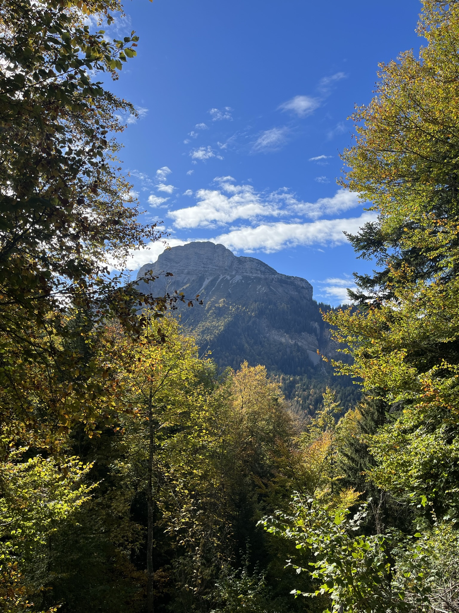

01



Entre Chartreuse et massif des Grandes Rousses
Une virée de 2 jours au cœur du massif de la Chartreuse puis des Grandes Rousses. Entre forêts humides et cols étroits. On traverse d'abord la Chartreuse pour arriver en fin de journée à Chamrousse. Le lendemain on pousse jusqu'à l'Alpe d'Huez et ses mythiques lacets pour ensuite revenir sur Grenoble et profiter d'un bon restaurant. Puis retour tranquille sur Lyon, des paysages pleins la tête.